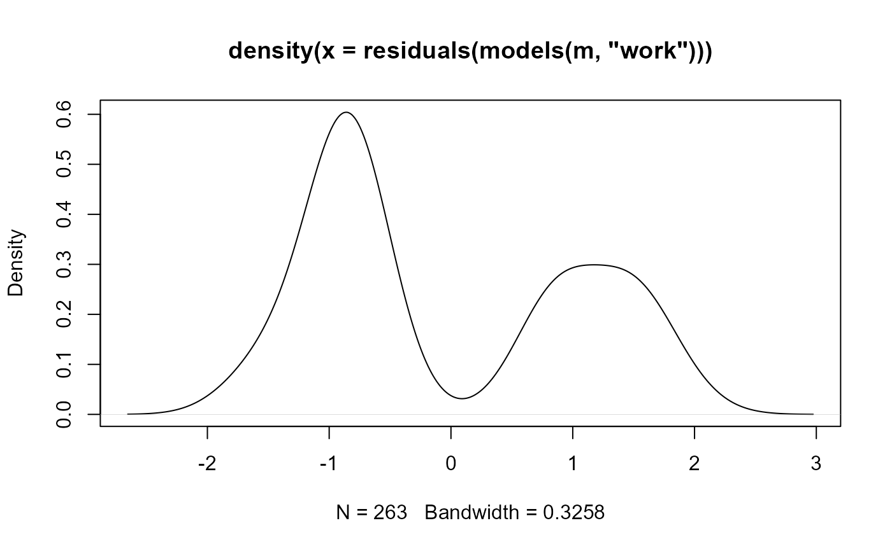

models is used to extract "glm" objects representing binary logit
models from a "nestedLogit" object.
Usage
models(model, select, as.list = FALSE)
# S3 method for class 'nestedLogit'
models(model, select, as.list = FALSE)Arguments
- model
a
"nestedLogit"model.- select
a numeric or character vector giving the number(s) or names(s) of one or more binary logit models to be extracted from
model; if absent, a list of all of the binary logits models inmodelis returned.- as.list
if
TRUE(the default isFALSE) and one binary logit model is selected, return the"glm"object in a one-element named list; otherwise a single model is returned directly as a"glm"object; when more than one binary logit model is selected, the corresponding"glm"objects are always returned as a named list.
Value
model returns either a single "glm" object (see glm) or a
list of "glm" objects, each representing a binary logit model.
Examples
data("Womenlf", package = "carData")
comparisons <- logits(work=dichotomy("not.work",
working=c("parttime", "fulltime")),
full=dichotomy("parttime", "fulltime"))
m <- nestedLogit(partic ~ hincome + children,
dichotomies = comparisons,
data=Womenlf)
# extract a binomial logit model
models(m, "work")
#>
#> Call: glm(formula = work ~ hincome + children, family = binomial, data = Womenlf,
#> contrasts = contrasts)
#>
#> Coefficients:
#> (Intercept) hincome childrenpresent
#> 1.33583 -0.04231 -1.57565
#>
#> Degrees of Freedom: 262 Total (i.e. Null); 260 Residual
#> Null Deviance: 356.2
#> Residual Deviance: 319.7 AIC: 325.7
# use that to plot residuals
plot(density(residuals(models(m, "work"))))
